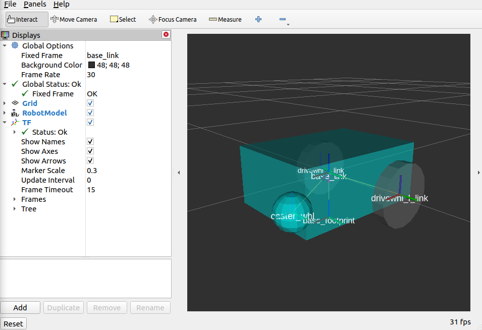

Revisão do ROS 2
Comunicação, simulação, raciocínio espacial, Nav2 e conexão com os robôs do laboratório.
Inteli · Engenharia da Computação
O que vamos revisar
Clique em um tema para ir direto a ele. Use as setas do teclado para avançar.
Como o ROS 2 funciona
O ROS 2 é um conjunto de programas (nós) que trocam mensagens pela rede. Cada nó faz uma tarefa, e a comunicação acontece pelo middleware DDS.
Os nós não se conhecem diretamente. Eles só combinam nomes de tópicos e tipos de mensagem.
Peças básicas
- Nó: um processo que faz uma coisa (ler sensor, planejar, controlar).
- Mensagem: dados com tipo fixo, como sensor_msgs/LaserScan.
- Domínio: ROS_DOMAIN_ID separa redes. Nós de domínios diferentes não se veem.
- Descoberta: é automática. O DDS encontra quem publica e quem assina.
ros2 topic list
ros2 node info /mapeador
Três formas de comunicação
| Mecanismo | Padrão | Quando usar | Exemplo no nosso stack |
|---|---|---|---|
| Tópico | Publicar e assinar, contínuo, sem resposta | Dados que chegam o tempo todo | /scan, /odom, /cmd_vel |
| Serviço | Pedido e resposta, uma vez | Ações curtas e rápidas | /dobot/clear_alarms, /dobot/emergency_stop |
| Ação | Goal, feedback durante a execução e result, com cancelamento | Tarefas longas que demoram e podem ser canceladas | /navigate_to_pose |
Tópico
Quem publica não espera confirmação. Vários assinantes podem ouvir o mesmo tópico.
Serviço
O cliente envia um request e espera o response. Só um servidor atende.
Ação
O cliente envia o goal, recebe feedback enquanto o robô anda e recebe o result no fim.
ros2 service list
ros2 action list
Como o Gazebo conversa com o ROS 2
Clique em cada peça para ver o que ela faz.
Detalhe
Um mundo SDF com robô, sensor e plugin
O arquivo SDF contém a física e a geometria do robô. Um robô é composto principalmente por links (partes rígidas, como chassi e rodas) e joints (articulações que conectam os links).
Cada <link> geralmente tem três tags principais:
<visual>
Como o robô aparece na tela: malhas 3D, cores e formas.
<collision>
A caixa delimitadora usada pelo motor de física para calcular batidas e interações.
<inertial>
A massa e a matriz de inércia, para simular o peso e a dinâmica.
<!-- trecho simplificado -->
<sdf version="1.9">
<world name="sala">
<plugin filename="gz-sim-sensors-system" name="gz::sim::systems::Sensors">
<render_engine>ogre2</render_engine>
</plugin>
<model name="robo">
<link name="base_link">
<sensor name="lidar" type="gpu_lidar">
<topic>scan</topic>
<update_rate>10</update_rate>
</sensor>
</link>
<plugin filename="gz-sim-diff-drive-system" name="gz::sim::systems::DiffDrive">
<left_joint>left_wheel_joint</left_joint>
<right_joint>right_wheel_joint</right_joint>
</plugin>
</model>
</world>
</sdf>

Como um modelo entra no Gazebo
- Malha visual (mesh): o formato do robô, feito no CAD ou Blender e exportado como .dae, .obj ou .stl. Use metros como unidade.
- Colisão: formas simples (box, cylinder, sphere). Malhas complexas deixam a física lenta.
- Inércia: massa e momento de inércia. Sem isso, o robô tomba ou tremelica.
- SDF: o arquivo model.sdf junta tudo em links e joints, com sensores e plugins.
caixa_robo/ ├── model.config # nome, versão e qual .sdf usar ├── model.sdf # links, sensores, plugins └── meshes/ └── base.dae # aparência do robô
<!-- model.sdf (trecho) -->
<model name="caixa_robo">
<link name="base_link">
<inertial>
<mass>5.0</mass>
<inertia>
<ixx>0.05</ixx><iyy>0.05</iyy><izz>0.08</izz>
</inertia>
</inertial>
<visual name="visual">
<geometry>
<mesh><uri>model://caixa_robo/meshes/base.dae</uri></mesh>
</geometry>
</visual>
<collision name="collision">
<geometry>
<box><size>0.30 0.20 0.10</size></box>
</geometry>
</collision>
</link>
</model>
Qual direção cada tópico segue?
No ros_gz_bridge, o separador entre o tipo do ROS e o tipo do Gazebo indica o sentido.
| Tópico | Direção | Configuração gerada |
|---|
A hierarquia de frames da robótica móvel
Cada frame é um referencial. Cada seta é uma transformação entre dois deles, e alguém precisa publicá-la.
map
Referencial global e fixo do mapa salvo.
odom
Começa quando o robô liga. Anda sem saltos, mas acumula erro.
base_link
Centro do robô. O controle move essa base.
laser_link
Onde o LiDAR está montado no robô.
ros2 run tf2_ros tf2_echo map base_link # transformação ao vivo
Orientação no plano: do ângulo ao quaternion
Vista de cima. A seta laranja é a frente do robô (eixo x).
Estados dos servidores do Nav2
Subir o stack com um arquivo de launch
# nav_stack.launch.py (simplificado)
from launch import LaunchDescription
from launch_ros.actions import LifecycleNode, Node
def generate_launch_description():
amcl = LifecycleNode(package='nav2_amcl', executable='amcl',
name='amcl', namespace='')
planner = LifecycleNode(package='nav2_planner', executable='planner_server',
name='planner_server', namespace='')
controller = LifecycleNode(package='nav2_controller', executable='controller_server',
name='controller_server', namespace='')
manager = Node(package='nav2_lifecycle_manager',
executable='lifecycle_manager',
name='lifecycle_manager_navigation',
parameters=[{'autostart': True,
'node_names': ['amcl', 'planner_server',
'controller_server']}])
return LaunchDescription([amcl, planner, controller, manager])
Simular o lifecycle manager
Enviar um goal e acompanhar a execução
Goal
PoseStamped: posição e orientação do destino, no frame map.
Feedback
Chega durante a execução: distance_remaining, number_of_recoveries.
Result
Chega no fim: error_code (sucesso, falha ou cancelado).
# cliente em rclpy (simplificado) from nav2_msgs.action import NavigateToPose from rclpy.action import ActionClient client = ActionClient(node, NavigateToPose, 'navigate_to_pose') goal = NavigateToPose.Goal() goal.pose.header.frame_id = 'map' goal.pose.pose.position.x = 3.0 goal.pose.pose.position.y = 2.0 goal.pose.pose.orientation.z = 0.707 # yaw de 90° goal.pose.pose.orientation.w = 0.707 future = client.send_goal_async(goal, feedback_callback=on_feedback) # depois: future.result().get_result_async() → error_code
Conectar no TurtleBot
- Instalar os pacotes (uma vez no seu computador).
- Definir as variáveis no terminal. ROS_DOMAIN_ID é 10 × número do grupo. Ex.: grupo 2 → 20.
- Confirmar que o robô aparece na rede do grupo.
- Dirigir pelo teclado com o teleop.
# 1. instalar sudo apt install ros-jazzy-rmw-cyclonedds-cpp ros-jazzy-turtlebot3-teleop # 2. variáveis (use o seu grupo) export ROS_DOMAIN_ID=20 # 10 × número do grupo export RMW_IMPLEMENTATION=rmw_cyclonedds_cpp export TURTLEBOT3_MODEL=burger # 3. conferir os tópicos ros2 topic list # deve listar /scan, /odom, /cmd_vel... ros2 topic echo /scan --once # 4. dirigir pelo teclado ros2 run turtlebot3_teleop teleop_keyboard
Conectar no Dobot Magician
Passo 2 · Terminal 1: driver
cd /home/inteli/Antigravity/Dobot_Magician
source /opt/ros/jazzy/setup.bash
source install/setup.bash
# Inicia o driver com velocidade segura (20%):
ros2 launch magician_lite_driver feedback.launch.py speed_ratio:=20.0
Passo 3 · Terminal 2: comandos
cd /home/inteli/Antigravity/Dobot_Magician source /opt/ros/jazzy/setup.bash source install/setup.bash # 1. Movimento articular (giro seguro na base J1): ros2 service call /dobot/move_to_joints magician_lite_msgs/srv/SetJoints "{j1: -0.30, j2: -0.10, j3: 0.75, j4: 0.0}" # 2. Movimento cartesiano (subir 1 cm no eixo Z, modo MOVJ): ros2 service call /dobot/move_to_pose magician_lite_msgs/srv/SetPose "{x: 0.172, y: -0.073, z: 0.060, r: -0.40, mode: 1}" # 3. Parada de emergência: ros2 service call /dobot/emergency_stop std_srvs/srv/Trigger "{}" # 4. Limpar alarmes (se o LED ficar vermelho): ros2 service call /dobot/clear_alarms std_srvs/srv/Trigger "{}"
Três atividades, uma por plataforma
Grupos de 2. Cada atividade tem etapas com cronômetro, entregável e critérios de avaliação.
1 · TurtleBot físico
50 min · odometria, erro e um nó que para pela leitura de /odom.
2 · Gazebo simulado
60 min · modelo com visual, collision e inertial, mais bridge e experimento.
3 · Dobot Magician
45 min · repetibilidade, comparação de modos e parada de emergência.
Odometria, erro e um nó de controle
- Medir a deriva (12 min): 4 vezes, 1 m em linha reta com o teleop. Trena contra /odom.
- Nó que para pela odometria (18 min): anda 1 m lendo /odom, sem tempo fixo.
- Quadrado de 1 m (12 min): giros de 90° controlados pelo yaw do quaternion.
- Comparar e analisar (8 min): trena contra odometria e um parágrafo de análise.
Entregável e critérios
- Código do nó e gráfico de /odom (x × y).
- Tabela de deriva e a fonte do erro (giro ou deslocamento).
- O nó para sozinho, a deriva é medida e não estimada.
Montar um robô e um mundo do zero
- Estrutura do modelo (15 min): model.config, model.sdf, visual e collision.
- Inércia e juntas (10 min): I = m(a² + b²)/12 por eixo e duas rodas revolute.
- Plugins e sensor (10 min): DiffDrive e LiDAR com gpu_lidar.
- Bridge e verificação (10 min): /scan, /odom, /cmd_vel, /clock, com o sentido certo, e frames no RViz.
- Experimento (15 min): mudar massa ou atrito e medir a distância de frenagem.
Entregável e critérios
- Pasta do modelo, arquivo do bridge e vídeo de 30 s.
- Cálculo de inércia e tabela do experimento.
- O robô anda sem tombar nem tremer.
Repetibilidade e espaço de trabalho
- Envelope e setup (5 min): limites definidos pelo instrutor, speed_ratio:=20.0.
- Repetibilidade (10 min): 5 vezes no mesmo ponto. Média e desvio padrão.
- Comparar os modos (8 min): dois pontos com cada mode do SetPose.
- Triângulo de 3 cm (12 min): erro de fechamento medido.
- Parada de emergência (10 min): tempo até parar e o que acontece sem reativar.
Entregável e critérios
- Tabela de repetibilidade e comparação dos modos.
- Erro de fechamento do triângulo e relato da parada.
- Todos os movimentos dentro do envelope combinado.
Resumo da revisão
Comunicação
Nós trocam tópicos, serviços e ações pelo DDS, no mesmo ROS_DOMAIN_ID.
Simulação
SDF descreve o mundo e o modelo; plugins dão comportamento; o bridge conecta ao ROS 2.
Espaço
map → odom → base_link → laser_link. Quaternions guardam a orientação.
Nav2
Servidores em lifecycle, um launch para subir tudo, e a action NavigateToPose.
Perguntas?